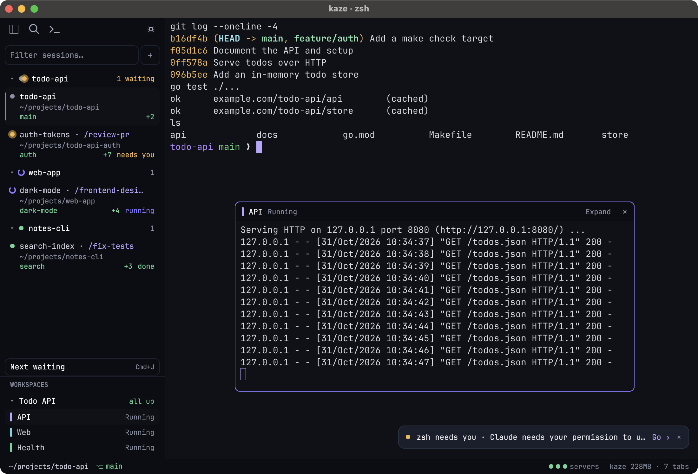

A sidebar of sessions.
Sessions group by repo, worktrees included. Each row shows its folder, branch, the lines changed and the slash command it runs, plus a plain needs you, running or done.
See which session needs you, which one is working and which one is done.
Keep your servers floating close by. Find anything with one key.
Also on WindowsGo + GioMIT licensed

Run Claude Code in as many sessions as you like. Kaze keeps track,
so you only look when something needs you.
Sessions group by repo, worktrees included. Each row shows its folder, branch, the lines changed and the slash command it runs, plus a plain needs you, running or done.
Next waiting takes you to the next session that needs an answer, in sidebar order. A toast and an optional chime tell you when Claude asks, even while you work elsewhere.
Set up the hooksWatch a server’s log without leaving your Claude session. Click a workspace member and it floats over the session: drag it, resize it, type into it, or expand it to the main view.
Press Ctrl ` for a quick shell in the session’s folder. Press it again to hide it; it keeps running, with its screen, until the session closes.
⌘ K opens the palette: waiting sessions first, then every session and server, your Claude Code skills and slash commands, and Kaze’s own actions.
Your folder and branch, your servers at a glance, and optional Claude plan and context usage. The useful details stay out of your output.
See the usage setupThe same folders. The same servers. The same log tail.
Turn your startup routine into a workspace, then run it from Settings or the palette.
claudeReady to workdocker compose up -dWait for Dockernpm run devWait for port 8000docker compose logs -f apiWait for port 8000Each member gets a line in the sidebar and a dot in the status bar. Click one to float it over your session.
Five themes. Live font, spacing and cursor controls. Change them in Settings, or edit the small config file directly.
Explore SettingsSettings shows which Claude Code hooks are missing and adds them for you, after showing the change and backing up your file.
See the setup checkEvery shortcut can be changed in the config, and Settings lists the commands so far with their keys.
See the shortcutsKaze redraws the cells that changed and caches its glyphs. When nothing changes, there’s no frame to draw, floating panes included.
Build Kaze from source. You’ll need Go 1.27 or newer; macOS also needs the Xcode Command Line Tools.
Used every day on macOS and Windows. A few Mac touches are still to come.
Follow developmentgit clone https://github.com/patrick-gogo/kaze-terminal.git
cd kaze-terminal./tools/package-macos.sh
open dist/Kaze.appPalette: ⌘ K · Scratch shell: Ctrl ` · Settings: ⌘ ,
go build -ldflags "-H=windowsgui" -o kaze.exe ./cmd/kaze
.\kaze.exePalette: Ctrl Shift K · Scratch shell: Ctrl Shift ` · Settings: Ctrl ,